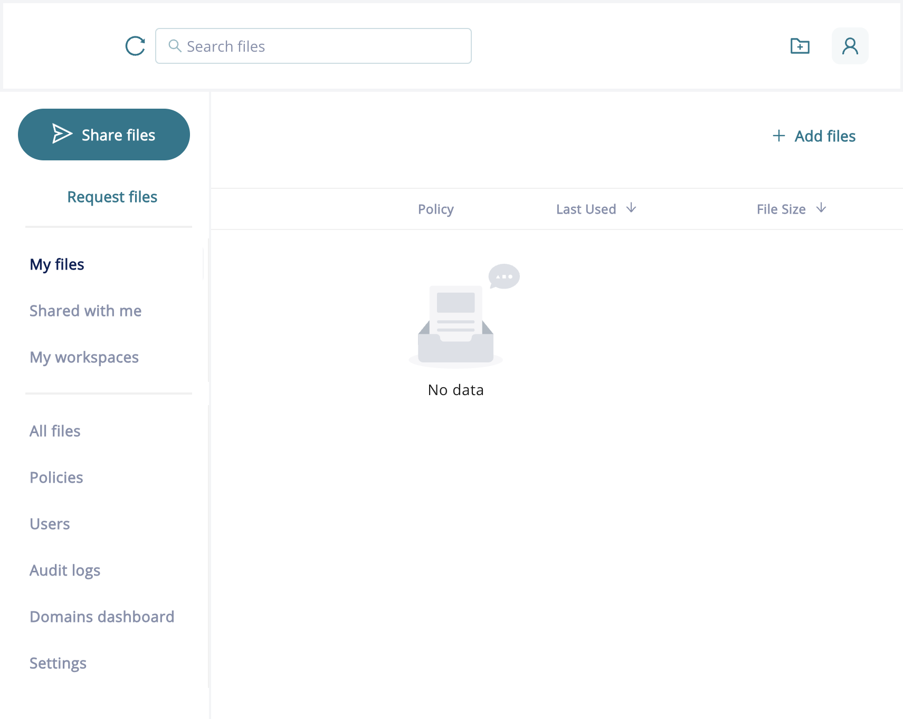
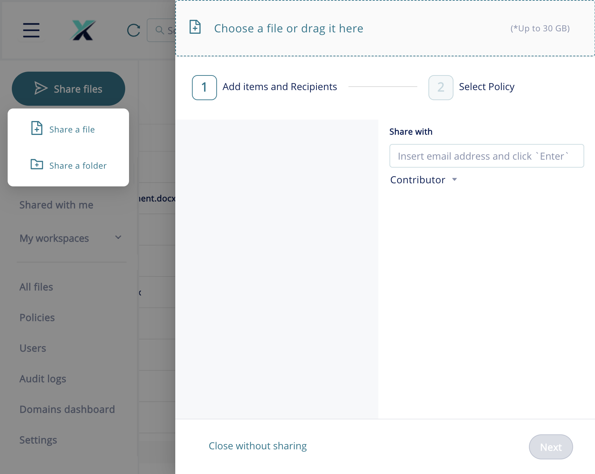
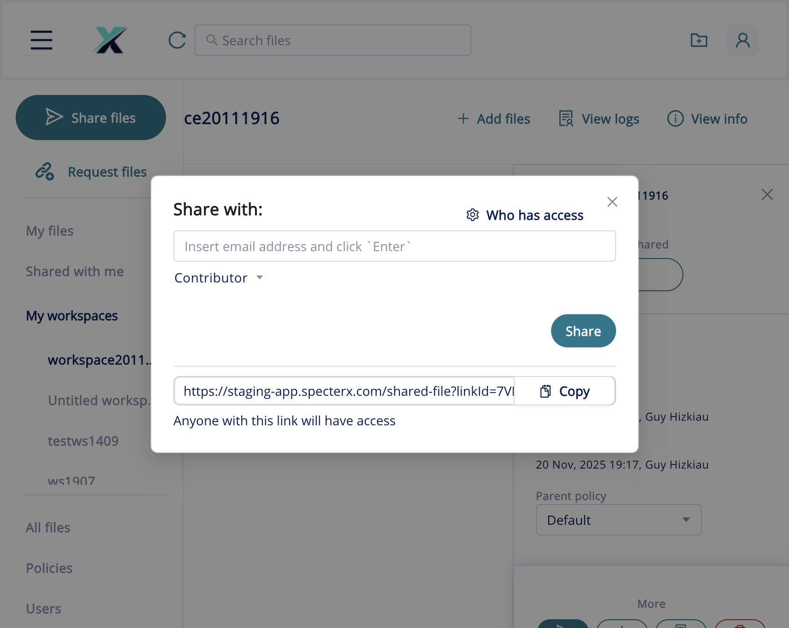

The SpecterX Web Platform lets you upload files, assign security policies, and share protected links with recipients — all from your browser. This article walks you through the complete sharing workflow, from uploading your file to sending the protected link and understanding what your recipient sees.
Before you get started
- Requirements. A SpecterX account with a Collaborator or Administrator role. Contact your system administrator if you don't have access.
- Permissions required. You need Collaborator or higher permissions to upload and share files. Viewer-only users cannot initiate shares.
- Supported file types. Most office documents (.docx, .xlsx, .pptx), PDFs, and image files are supported. See Supported file types & browsers.
- Limitations. Individual files up to 30 GB can be uploaded. Sharing with recipients outside your organisation requires that your administrator has not restricted external sharing in the active policy.
Upload a file and open the Share dialog
When you log in to the SpecterX Web Platform, you arrive at the My Files view.
In the left navigation, click Share files (the teal button at the top of the sidebar). A dropdown appears with two options: Share a file and Share a folder.

Click Share a file. The Share dialog opens. The dialog has two steps: 1 — Add items and Recipients and 2 — Select Policy. You are now on Step 1.

In the file drop zone, either drag your file into the area, or click Choose a file or drag it here and browse to select a file. Files up to 30 GB are supported. Wait for the progress bar to turn green before continuing.
Add recipients and set permissions
In the Share with field, type a recipient's email address and press Enter. Repeat for each recipient. Each address appears as a chip below the field.
Click the Contributor dropdown to set the permission level. Options are:
- Viewer — can view files but cannot upload or modify them.
- Contributor — can view, upload, and download files (subject to policy). This is the default.
- Co-Owner — full access, including managing permissions and policies.
Select a security policy
After adding at least one recipient and uploading your file, click Next. You advance to Step 2: Select Policy.
From the policy dropdown, choose the security policy that matches the sensitivity of the data. Common policies include:
- Default — standard access with tracking.
- Email verification — recipient must enter an email OTP before accessing the file.
- HIPAA Compliance — watermarking, phone verification, disabled forwarding.
If the selected policy requires phone verification, a phone number field appears for each recipient. Enter the recipient's mobile number in international format (e.g. +1 212 555 0100).
Complete the share and copy the link
Click Share Files to complete the share. SpecterX sends a notification email to each recipient with a protected link. The dialog closes and your file appears in My Files.
To copy the link later, click the share icon (arrow) next to the file name in My Files. A dialog appears with the protected link URL. Click Copy to copy it to your clipboard.

Recipient experience
When your recipient clicks the protected link they arrive at the SpecterX Recipient Page. What they see depends on the policy you applied:
- Email verification policy. A prompt asks them to enter a one-time code sent to their email. After entering the code, the file opens in the SpecterX Viewer.
- Phone (SMS) verification policy. A prompt asks them to enter a code sent by SMS. They enter it to access the file.
- Password-protected policy. The recipient must enter a password the sender defined during the share.
- Default (no verification). The recipient clicks the link and the file opens directly.
Update permissions after sharing
In My Files, click the share icon next to the file name. The Share with dialog opens with a Who has access link.
Click Who has access to open the Share & Permissions Drawer. This lists every recipient and their current permission level.
To change a permission, click the role dropdown next to a recipient's name. To remove a recipient, click the delete icon. The protected link stays active for remaining recipients.
To change the policy, use the Parent policy dropdown in the Share & Permissions Drawer. The new policy takes effect immediately.